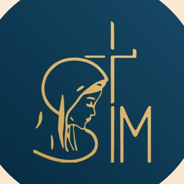
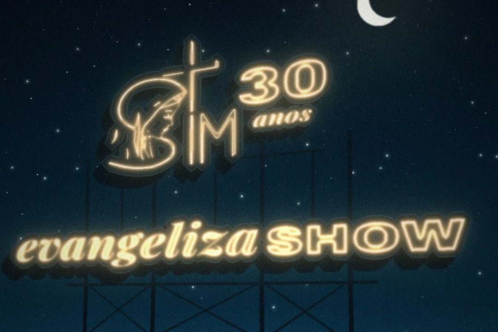
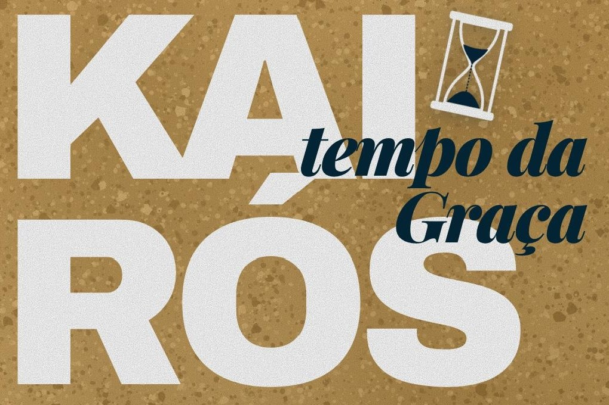
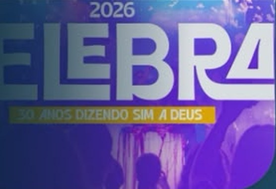
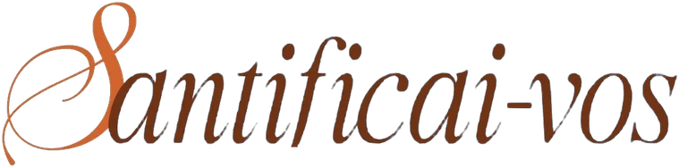
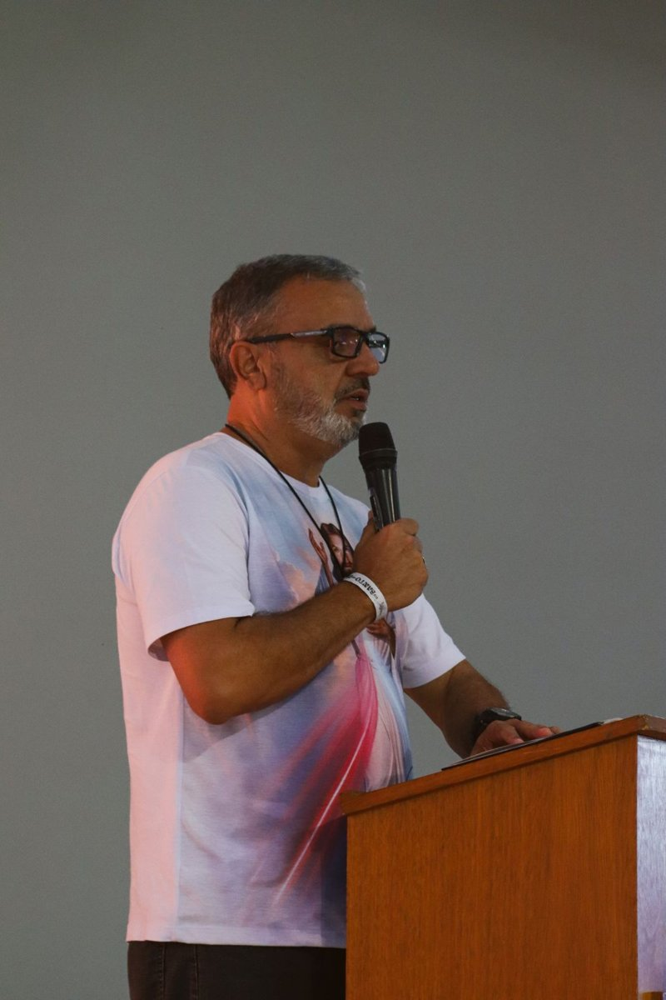

-

Sáb · 21/11 · 19h30 evangelizaSHOW Louvor, oração e muita música -

22 de novembro · 8h Kairós
30 anos Alcançados pela Misericórdia -

CELEBRAI 2026 Inscrições abertas até 12/12 Inscreva-se -
Seminário de Vida
Diga SIM
a Deus Em breve -
Curso

Uma escola de santidade Em breve -

Para aprofundar a fé FORMAÇÃO Conteúdos para crescer na fé - Jesus espera o seu sim Seja um sócio benfeitor Quero ser